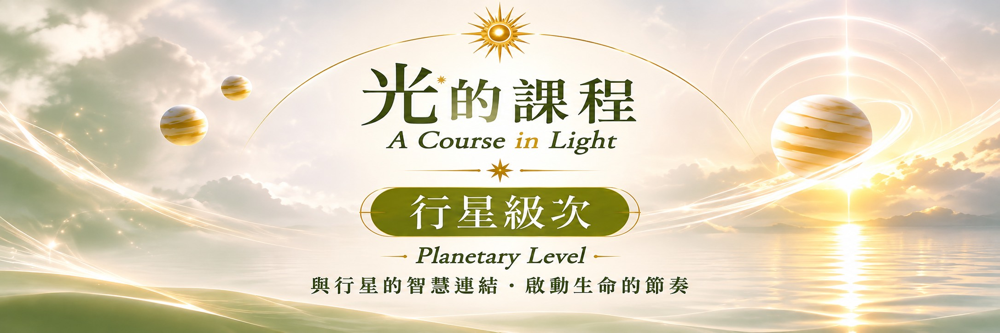

行星一
自我覺醒 - 勇敢成為自己
從「我是誰」開始，覺察自己的身體、個性與生命方向。
練習聆聽內在的聲音，帶著勇氣踏出屬於自己的第一步。

從內在的光，走向更寬廣的連結。
在光的課程中，初階級次陪伴我們認識自己，透過不同色光的靜心練習，慢慢建立與內在的連結。行星級次則延續這份基礎，將覺察由個人擴展到生命、他人與地球。課程中的「彩虹橋」象徵不同意
識層面的連結，也邀請我們將靜心中的理解帶回日常生活。
九個級次，持續深入光的學習旅程。下列為娜娜問路居整理的學習方向；各級次正式內容請以官方教材及簡介為準。
自我覺醒 - 勇敢成為自己
從「我是誰」開始，覺察自己的身體、個性與生命方向。
練習聆聽內在的聲音，帶著勇氣踏出屬於自己的第一步。
自我價值 - 安住與豐盛
探索金錢、資源、天賦與自我價值的關係。
學習珍惜自己所擁有的，在日常生活中建立穩定與安全感。
溝通學習 - 真實表達
覺察思想、語言與溝通習慣，探索與手足、朋友及周遭環境的連結。
練習清晰表達，也用開放的心聆聽。
家庭根源 - 內在歸屬
回到家庭、成長經驗與情感根源，照見內在對安全感和歸屬的需要。
學習滋養自己，讓心成為可以安心停留的家。
創造喜悅 - 綻放光芒
重新連結內在小孩、玩樂、愛與創造力。
允許自己被看見，享受表達與創作的過程，讓生命自然展現光彩。
日常實踐 - 照顧身心
將覺察帶入工作、服務、健康與生活節奏。
從細微的日常選擇開始，練習照顧身體、建立適合自己的秩序。
關係平衡 - 相遇與合作
透過伴侶、合作與一對一關係認識自己。
練習尊重彼此的差異，在親密與獨立之間找到真實而平衡的位置。
深層轉化 - 信任與重生
探索親密、共享資源、失去、恐懼與深層情緒。
溫柔面對生命的轉變，練習放下控制，讓新的力量從內在生長。
拓展視野 - 追尋生命意義
走向哲學、信念、高等學習與遠方世界，探索自己相信什麼。
以開放的心拓展視野，將領悟化為自由而有方向的生活。
連結
從認識自己開始，感受自己與他人、地球及更大整體之間的關係。
覺察
在靜心與生活中，看見念頭、感受與反應，練習更清明地選擇。
實踐
讓光不只停留在冥想裡，也成為日常中的理解、關懷與行動。